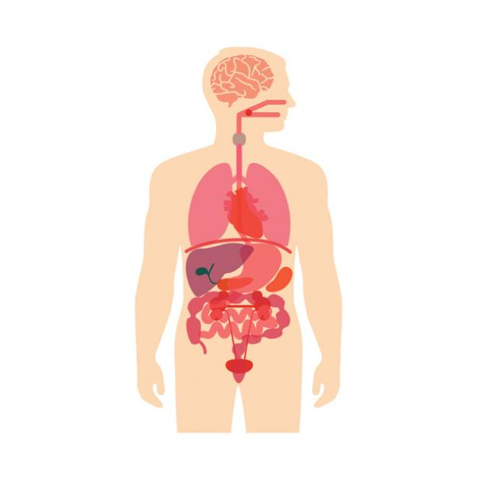

Tabla de contenidos del artículo
Es el crecimiento descontrolado de células anormales en el cuerpo. Las células cancerosas también se denominan células malignas.
Causas
El cáncer se origina de células en el cuerpo. Las células normales se multiplican cuando el cuerpo las necesita, y mueren cuando se dañan o cuando el cuerpo ya no las necesita.
El cáncer se presenta cuando el material genético de una célula cambia. Eso provoca que las células crezcan fuera de control. Las células se dividen demasiado rápido y no mueren de la manera normal.
Existen muchos tipos diferentes de cáncer. Puede aparecer en casi cualquier órgano o tejido, como el pulmón, el colon, los senos, la piel, los huesos o el tejido nervioso.
Existen múltiples factores de riesgo para el cáncer como:
- Exposición al benceno y otros químicos
- Beber demasiado alcohol
- Toxinas ambientales, como ciertos hongos venenosos y un tipo de moho que puede formarse en las plantas de cacahuete llamada aflatoxinas
- Problemas genéticos
- Obesidad
- Exposición a la radiación
- Demasiada exposición al sol
- Virus
La causa de muchos cánceres sigue siendo desconocida.
La causa más común de muerte relacionada con cáncer es el pulmonar.
En los Estados Unidos, el cáncer de piel es el tipo de cáncer que se diagnostica más frecuentemente.
En los hombres estadounidenses, más allá del cáncer de piel, los tres cánceres más comunes son:
- Cáncer de próstata
- Cáncer pulmonar
- Cáncer colorrectal
En las mujeres estadounidenses, más allá del cáncer de piel, los tres cánceres más comunes son:
- Cáncer de mama
- Cáncer pulmonar
- Cáncer colorrectal
Algunos cánceres son más comunes en ciertas partes del mundo. Por ejemplo, en Japón, existen muchos casos de cáncer del estómago. Pero en los Estados Unidos, este tipo de cáncer es mucho menos común. Es posible que las diferencias en la alimentación y los factores ambientales intervengan.
Algunos otros tipos de cáncer incluyen:
- Cáncer cerebral
- Cáncer cervical
- Linfoma de Hodgkin
- Cáncer de riñón
- Leucemia
- Cáncer del hígado
- Linfoma no-Hodgkin
- Cáncer ovárico
- Cáncer de páncreas
- Cáncer testicular
- Cáncer de tiroides
- Cáncer uterino
Enlaces a cada tipo de Cancer
Síntomas
Los síntomas del cáncer dependen del tipo y localización del tumor. Por ejemplo, el cáncer de pulmón puede provocar tos, dificultad respiratoria o dolor torácico. El cáncer de colon puede ocasionar diarrea, estreñimiento y sangre en las heces.
Es posible que algunos cánceres no presenten síntomas. En ciertos cánceres, como el pancreático, los síntomas a menudo no se presentan sino hasta que la enfermedad alcanza un estadio avanzado.
Los siguientes síntomas pueden ocurrir con el cáncer:
- Escalofríos
- Fatiga
- Fiebre
- Pérdida del apetito
- Malestar general
- Sudores nocturnos
- Dolor
- Pérdida de peso
Pruebas y exámenes
Al igual que sucede con los síntomas, los signos del cáncer varían según el tipo de tumor y su ubicación. Algunos de los exámenes mas comunes son:
- Biopsia del tumor
- Exámenes de sangre (los cuales buscan químicos como marcadores de tumores)
- Biopsia de médula ósea (para linfoma o leucemia)
- Radiografía de tórax
- Conteo sanguíneo completo (CSC)
- Tomografía computarizada
- Pruebas de la función hepática
- Resonancia magnética
- Tomografía por emisión de positrones
La mayoría de los cánceres se diagnostican por medio de una biopsia. Según la ubicación del tumor, esta puede ser un procedimiento sencillo o una operación delicada. A la mayoría de las personas afectadas por un cáncer se las somete a una tomografía computarizada para determinar la ubicación y tamaño exactos del tumor o tumores.
A menudo es difícil hacerle frente a un diagnóstico de cáncer. Es importante que usted hable con el proveedor de atención médica acerca del tipo, tamaño y localización del cáncer en el momento del diagnóstico. Igualmente, es recomendable hacer preguntas acerca de las opciones de tratamiento, junto con el pronóstico (resultado probable), beneficios y riesgos.
Es buena idea asistir al consultorio del proveedor con alguien más para que le ayude a pasar el momento y a entender el diagnóstico. Si tiene dificultades para hacer preguntas después de escuchar el diagnóstico, la persona que lo acompaña las puede hacer por usted.
El tratamiento varía de acuerdo con el tipo de cáncer y con su estadio. El estadio del cáncer hace referencia a cuánto ha crecido y al hecho de si el tumor se ha diseminado o no desde su ubicación original.
- Si el cáncer está en un solo lugar y no se ha diseminado, el método de tratamiento más común es la cirugía para curar el cáncer. Este a menudo es el caso con los cánceres de piel, al igual que los cánceres de pulmón, senos y colon.
- Si el tumor se ha diseminado solo a los ganglios linfáticos locales, algunas veces estos se pueden extirpar.
- Si todo el cáncer no se puede extirpar totalmente por medio de cirugía, las opciones de tratamiento pueden incluir radioterapia, quimioterapia, inmunoterapia, terapias dirigidas al cáncer u otros tipos de tratamiento. Algunos tipos de cáncer requieren una combinación de tratamientos. El linfoma o cáncer de los ganglios linfáticos, rara vez se trata con cirugía. La quimioterapia, la inmunoterapia, la radioterapia y otras terapias no quirúrgicas se utilizan con frecuencia.
Aunque el tratamiento para el cáncer puede ser difícil, existen muchas formas de mantener la fortaleza.
Si le están administrando radioterapia:
- El tratamiento se programa generalmente para todos los días entre semana.
- Debe emplear 30 minutos para cada sesión de tratamiento, aunque el tratamiento en sí generalmente toma solo unos cuantos minutos.
- Debe guardar mucho reposo y consumir una dieta bien balanceada durante el tratamiento de radioterapia.
- La piel en el área tratada puede volverse sensible e irritarse fácilmente.
- Algunos efectos secundarios de la radioterapia son temporales. Estos varían dependiendo del área del cuerpo que se está tratando.
Si le están haciendo quimioterapia:
- Coma bien.
- Guarde mucho reposo y no piense que se tienen que realizar todas las tareas a la vez.
- Evite a las personas con resfriados o gripe. La quimioterapia hace que el sistema inmunitario se debilite.
Hable sobre sus sentimientos con su familia, amigos o en un grupo de apoyo. Colabore con los proveedores durante todo el tratamiento. Ayudarse a sí mismo puede hacer que usted se sienta con más control.
Grupos de apoyo
El diagnóstico y tratamiento del cáncer ocasionan frecuentemente mucha ansiedad y pueden afectar la vida entera de una persona. Hay muchos recursos para los pacientes con cáncer.
Expectativas (Pronóstico)
El pronóstico depende del tipo de cáncer y de su estadio al momento del diagnóstico.
Algunos cánceres se pueden curar. Otros que son incurables igualmente se pueden tratar de manera efectiva. Algunas personas pueden vivir durante muchos años con esta enfermedad. Otros tumores son potencialmente mortales de manera rápida.
Posibles complicaciones
Las complicaciones dependen del tipo y estadio del cáncer, que se puede propagar.
Cuándo contactar a un profesional médico
Póngase en contacto con su proveedor si presenta síntomas de cáncer.
Prevención
Usted puede reducir el riesgo de presentar un tumor canceroso (maligno):
- Consumiendo alimentos saludables
- Haciendo ejercicio de manera regular
- Reduciendo el consumo de alcohol
- Manteniendo un peso saludable
- Minimizando la exposición a la radiación y a químicos tóxicos
- No fumando ni masticando tabaco
- Reduciendo la exposición al sol, en especial si se quema fácilmente
Los exámenes de detección para cáncer, como la mamografía para cáncer de mama y un análisis de sangre en heces o colonoscopia para cáncer de colon, pueden ayudar a detectar estos cánceres en sus estadios iniciales cuando son más curables. Algunas personas con alto riesgo de tener ciertos cánceres pueden tomar medicamentos para reducir su riesgo.